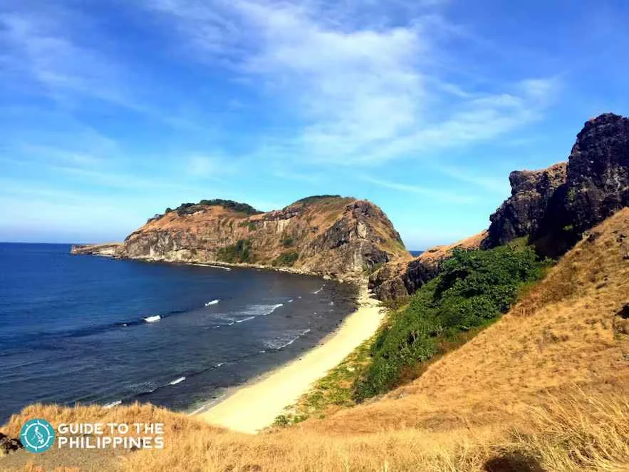
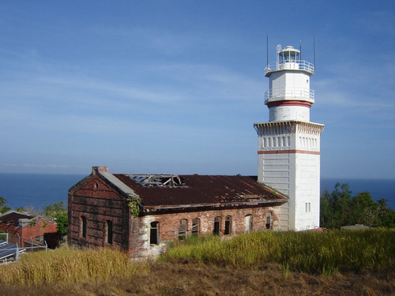
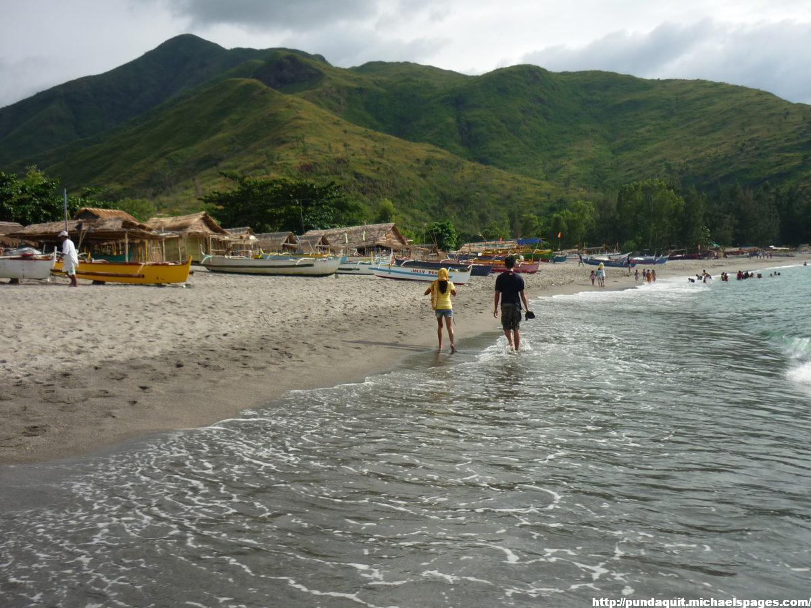
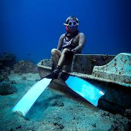
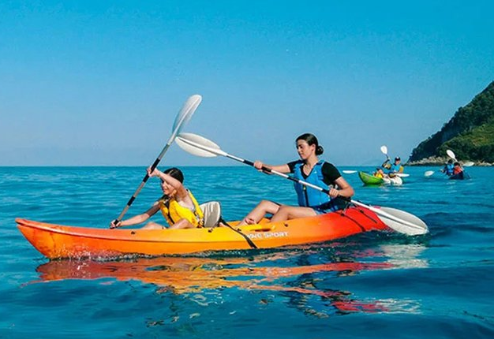
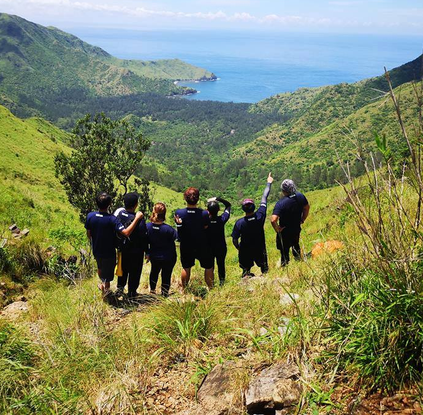
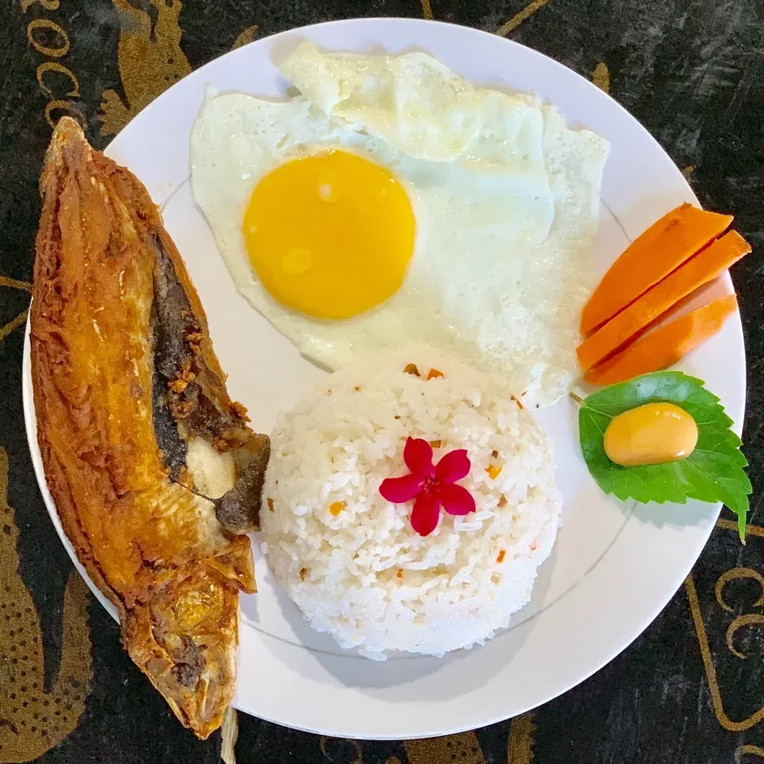

-

Island Hopping
Pundaquit is the main jump-off point for boat trips to nearby islands and coves like Capones Island, Anawangin Cove, Camara Island, and Nagsasa Cove.
-

Capones Island Lighthouse Visit
Explore the historic Spanish-era lighthouse on Capones Island and enjoy panoramic views of the West Philippine Sea.
-

Beach Camping
Camp overnight on nearby coves such as Anawangin or Nagsasa, known for their unique agoho trees, gray sand beaches, and quiet atmosphere.
-

Swimming and Snorkeling
Enjoy clear waters around Capones and Camara Islands, ideal for swimming and light snorkeling on calm days.
-
Fishing
Join local fishermen or try shore fishing in Pundaquit, experiencing a traditional livelihood of the community.
-

Kayaking
Paddle along the coastline or near coves to enjoy the scenery at a relaxed pace, especially during calm sea conditions.
-

Hiking and Nature Walks
Trek around nearby hills and coves to appreciate rugged landscapes, coastal views, and native vegetation.
-

Sunset Watching
Pundaquit offers stunning sunsets, with fishing boats silhouetted against the sky — perfect for photography and relaxation.
-

Local Food Trip
Sample freshly caught seafood and local Filipino dishes prepared by residents or small seaside eateries.
-

Photography
Capture dramatic seascapes, boats, cliffs, and island views that make Pundaquit a favorite spot for nature and travel photography.